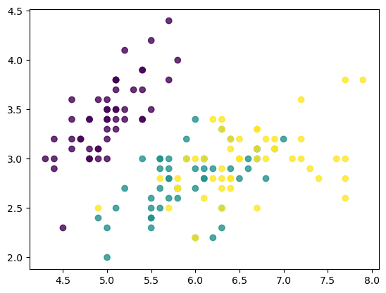
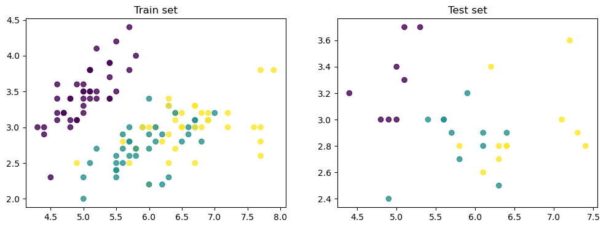
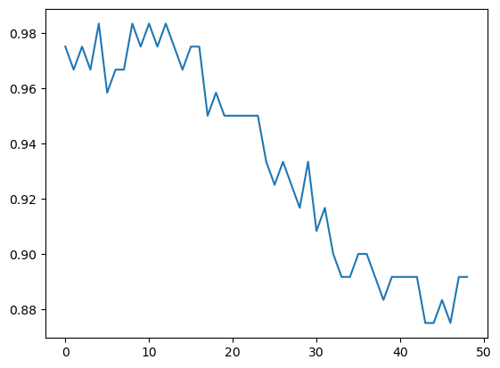
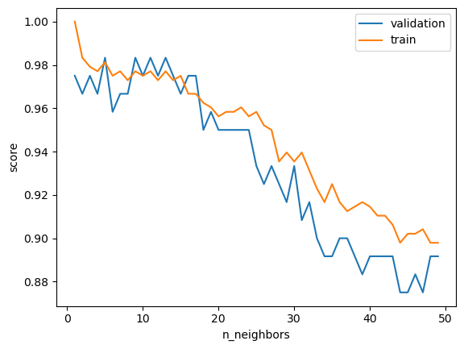
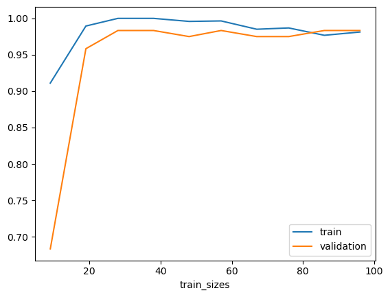

Sklearn : Sélection de Modele
Dans ce chapitre, nous explorerons les techniques de sélection de modèles en utilisant Scikit-learn. Vous apprendrez à diviser vos données, évaluer les performances de vos modèles avec des courbes de validation et d'apprentissage, et optimiser leurs hyperparamètres à l'aide de GridSearchCV et d'autres outils.
Sommaire :
- Chapitre 1 : Train Test Split
- Chapitire 2 : Validation Set et Cross Validation
- Chapitre 3 : Validation Curve
- Chapitre 4 : GridSearchCV
- Chapitre 5 : Confusion Matrix
- Chapitre 6 : Learning Curve
import numpy as np
import matplotlib.pyplot as plt
from sklearn.datasets import load_iris
iris = load_iris()
X = iris.data
y = iris.target
plt.scatter(X[:, 0], X[:, 1], c=y, alpha=0.8)

1. Train Test Split
from sklearn.model_selection import train_test_split
X_train, X_test, y_train, y_test = train_test_split(X, y, test_size=0.2, random_state=5)
print('Train set:', X_train.shape)
print('Test set:', X_test.shape)
-
Train set: (120, 4)
Test set: (30, 4)
plt.figure(figsize=(12, 4))
plt.subplot(121)
plt.scatter(X_train[:, 0], X_train[:, 1], c=y_train, alpha=0.8)
plt.title('Train set')
plt.subplot(122)
plt.scatter(X_test[:, 0], X_test[:, 1],c=y_test, alpha=0.8)
plt.title('Test set')

from sklearn.neighbors import KNeighborsClassifier
model = KNeighborsClassifier(n_neighbors=1)
model.fit(X_train, y_train)
print('train score:', model.score(X_train, y_train))
print('test score:', model.score(X_test, y_test))
-
train score: 1.0
test score: 0.9
2. Validation Set et Cross Validation
from sklearn.model_selection import cross_val_score
model = KNeighborsClassifier()
cross_val_score(model, X_train, y_train, cv=5, scoring='accuracy')
-
array([1. , 1. , 1. , 0.95833333, 0.95833333])
val_score = []
for k in range(1, 50):
score = cross_val_score(KNeighborsClassifier(k), X_train, y_train, cv=5).mean()
val_score.append(score)
plt.plot(val_score)

3. Validation Curve
from sklearn.model_selection import validation_curve
model = KNeighborsClassifier()
k = np.arange(1, 50)
train_score, val_score = validation_curve(model, X_train, y_train,
param_name='n_neighbors', param_range=k, cv=5)
plt.plot(k, val_score.mean(axis=1), label='validation')
plt.plot(k, train_score.mean(axis=1), label='train')
plt.ylabel('score')
plt.xlabel('n_neighbors')
plt.legend()

4. GridSearchCV
from sklearn.model_selection import GridSearchCV
param_grid = {'n_neighbors': np.arange(1, 20),
'metric': ['euclidean', 'manhattan']}
grid = GridSearchCV(KNeighborsClassifier(), param_grid, cv=5)
grid.fit(X_train, y_train)
-
param_grid = {'n_neighbors': np.arange(1, 20),
'metric': ['euclidean', 'manhattan']}
grid = GridSearchCV(KNeighborsClassifier(), param_grid, cv=5)
grid.fit(X_train, y_train)
print(grid.best_score_)
print(grid.best_params_)
-
0.9833333333333334
{'metric': 'euclidean', 'n_neighbors': 5}
model = grid.best_estimator_
model.score(X_test, y_test)
-
0.9333333333333333
5. Confusion Matrix
from sklearn.metrics import confusion_matrix
confusion_matrix(y_test, model.predict(X_test))
-
array([[ 8, 0, 0],
[ 0, 9, 2],
[ 0, 0, 11]])
6. Learning Curve
from sklearn.model_selection import learning_curve
N, train_score, val_score = learning_curve(model, X_train, y_train,
train_sizes=np.linspace(0.1, 1, 10), cv=5)
print(N)
plt.plot(N, train_score.mean(axis=1), label='train')
plt.plot(N, val_score.mean(axis=1), label='validation')
plt.xlabel('train_sizes')
plt.legend()
-
[ 9 19 28 38 48 57 67 76 86 96]
